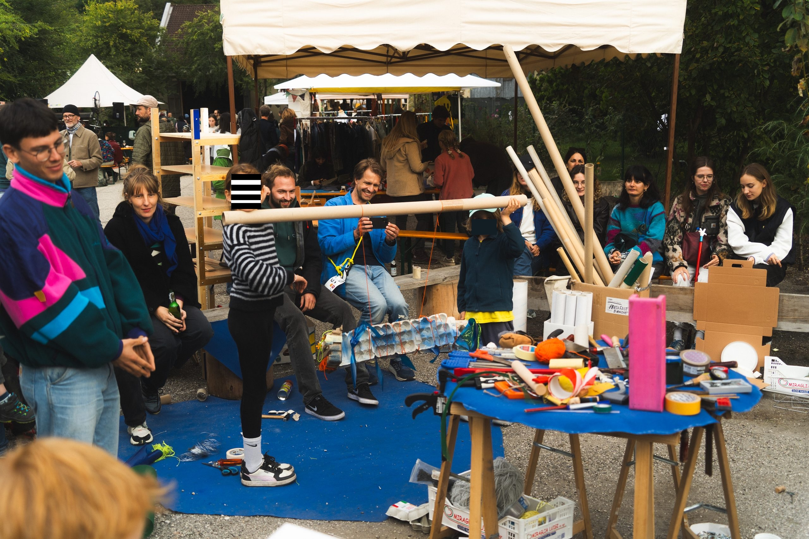
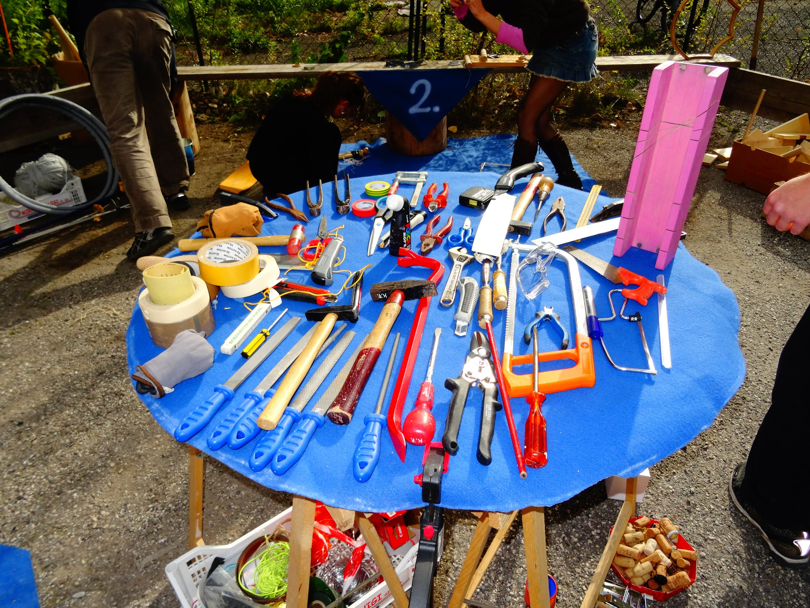
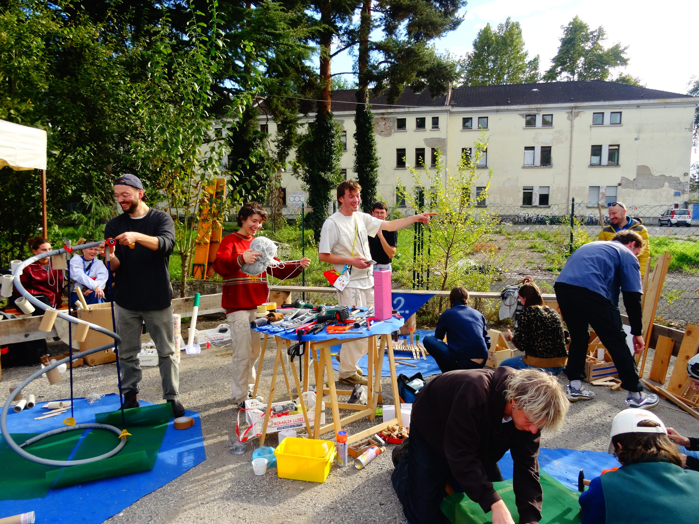
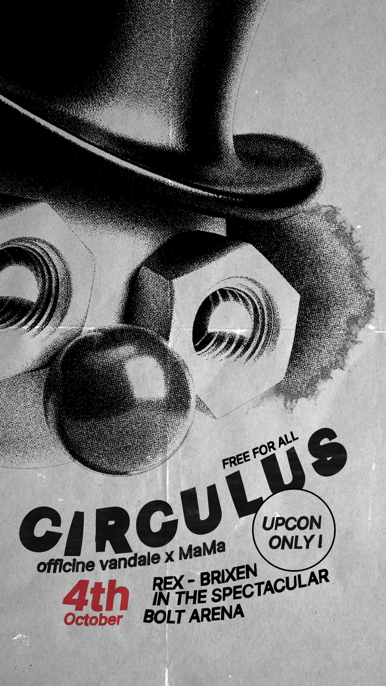

CIRCULUS
A workshop challenge for upcycling events

Is rare but there are days in a Design University where you just have to wait for something to get done. In one of those days, we started to do this "10 minutes build", where you have to come up with a design and realize it in a short period of time. We tought then this was a nice idea for a workshop and we started designing it out. During the Upcycling Convention of Bressanone we had the opportunity to put it out for the first time.
A short reel to show you
the energy of the event:
Context
To create the workshop we collaborated with "REX - Material und Dinge" an no profit active in the recover and management of second hand goods and materials. The aim of the workshop was, fun aside, to show how much potential discarded materials and goods can have.


Otucomes
We created the workshop with having in mind mainly people in the art and design community of Bolzano surroundings, but it turns out it was great for kids with their parents too. We confirmed the fact that make a team competition instead of an individual one is great to break the embarassement and generate ideas.
At the end of the process we were happy to see peopple bringing home some of their creation. The ones that were left there by the participants (an option we offered them) were properly separated (since we decided to offer participants only non-permanent joints) and recycled.
The poster I made
for the event:
